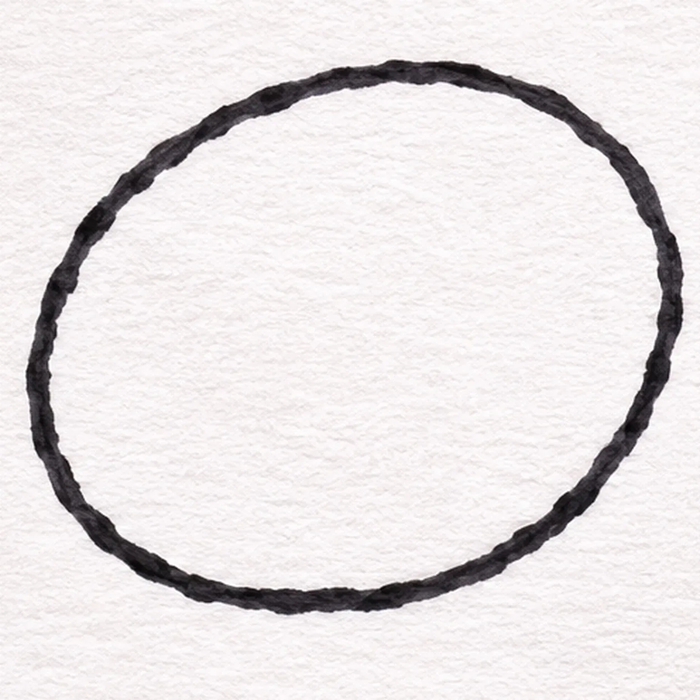
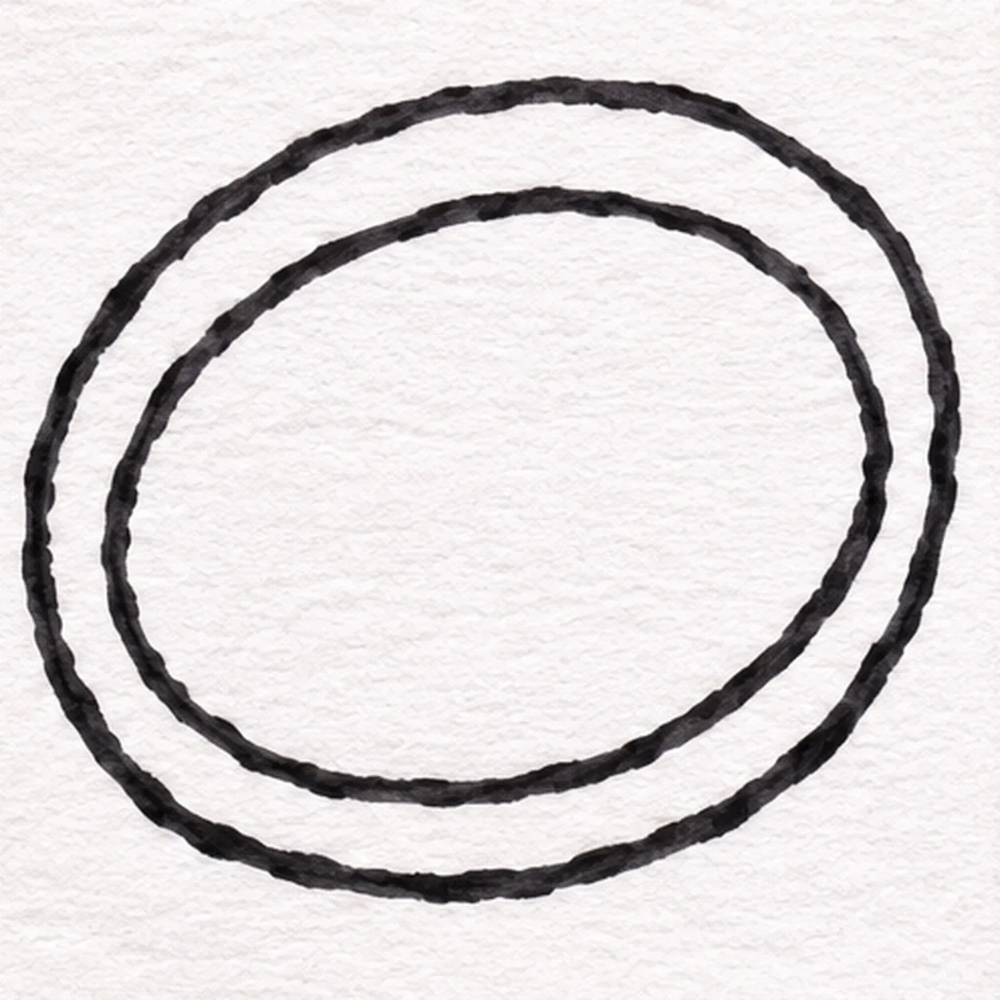
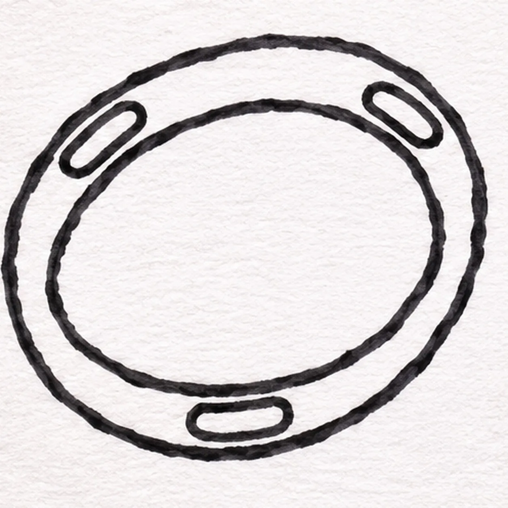
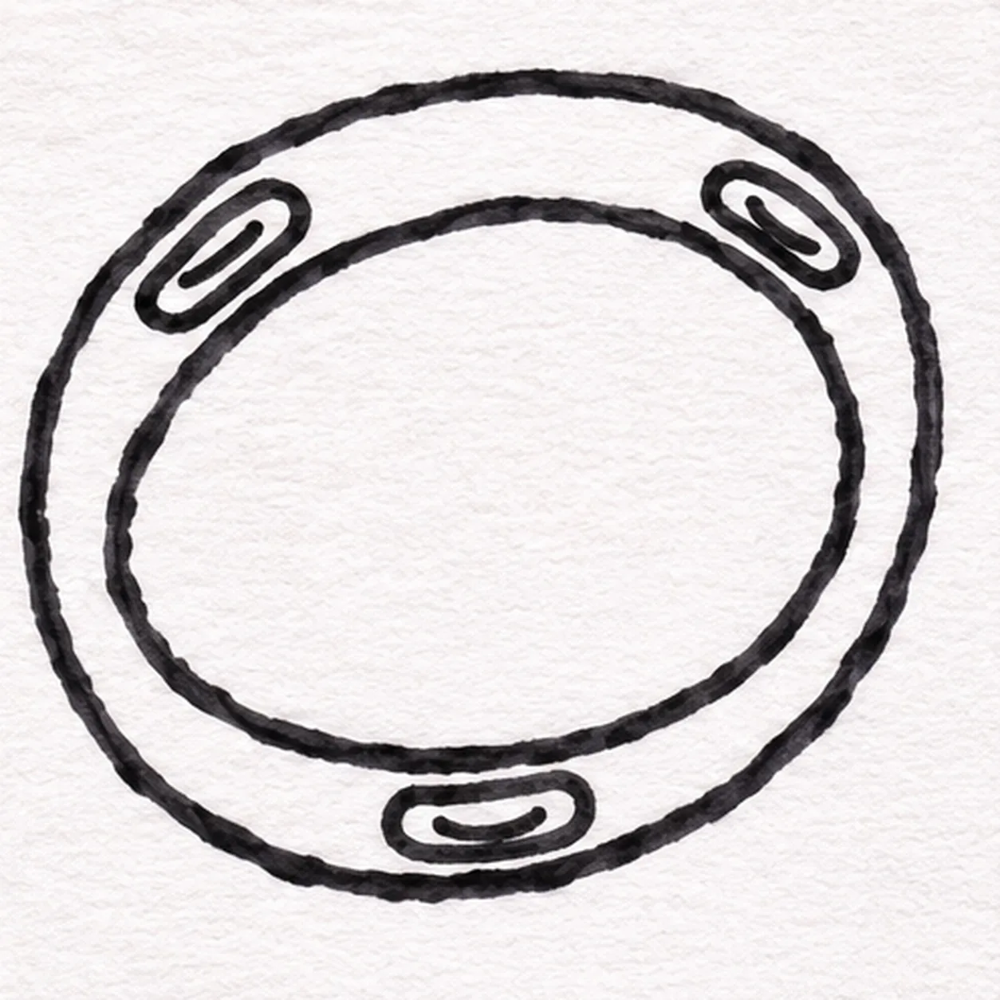
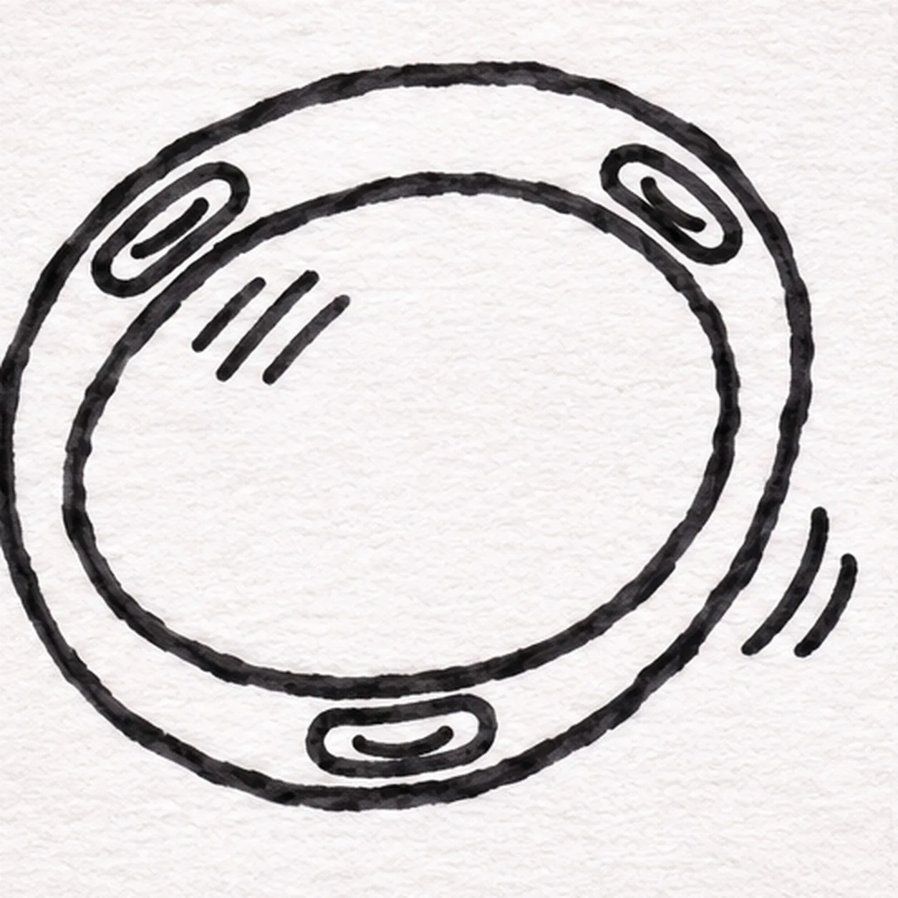

Felt-tip marker mode
Let's draw a tambourine
Treat this as one playful practice round: sketch the idea loosely, simplify the shapes, then commit with confident marker outlines and bright fills.
-
01

Draw the tambourine frame
In black felt tip, draw one broad round outline at the page center, keeping the ring a little handmade rather than compass-perfect.
Marker tip: Turn your paper as you work to make the big loop in one confident pass.
-
02

Open the drumhead
Draw a smaller circle inside the first, leaving a wide band all around for the metal jingles.
Marker tip: Keep the frame wide enough to fit a small slot at the bottom.
-
03

Place three jingle slots
Draw three small rounded slots in the frame band: one upper left, one upper right, and one at the bottom center. Keep all three separate from the inner circle.
Marker tip: Count the three openings before adding any metal curves.
-
04

Mark the three jingles
Inside each of the three slots, draw one small dark curved metal mark. Count three jingle centers before moving on.
Marker tip: Follow each slot’s long direction so the metal mark sits inside its outline.
-
05

Show the shake and head
Outside the right edge, add two short separate shake arcs. On the upper-left drumhead, draw three small diagonal hatches without crossing the inner rim.
Marker tip: Leave white paper between the shake arcs and the frame.
-
06
Color the tambourine
Fill the frame band with coral marker, the drumhead with pale yellow, and the three existing jingle slots with teal. Keep their dark centers, two shake arcs, and three head hatches crisp under the color.
Marker tip: Move the marker across each area in broad strokes and leave a little paper grain visible.